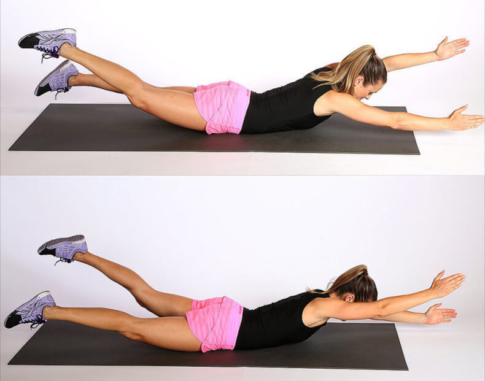

Лодочка
Формирует мышечный корсет, уменьшает объём талии, прорабатывает широчайшие мышцы спины. Нагружает большую ягодичную мышцу, бедра и икроножные. «Лодочку» можно выполнять, лёжа на спине, а также лёжа на животе. Нам подойтет вариант “лежа на животе”.
Как правильно выполнять:
- Ложимся на пол на живот, ноги вместе, руки вытянули вперёд.
- На выдохе прогибаемся, стараясь поднять выпрямленные руки и ноги как можно выше.
- Задерживаемся в таком положении, ложимся на живот и расслабляем мышцы, дышим свободно.
Повторяем три раза. Время отдыха между подходами – одна минута.